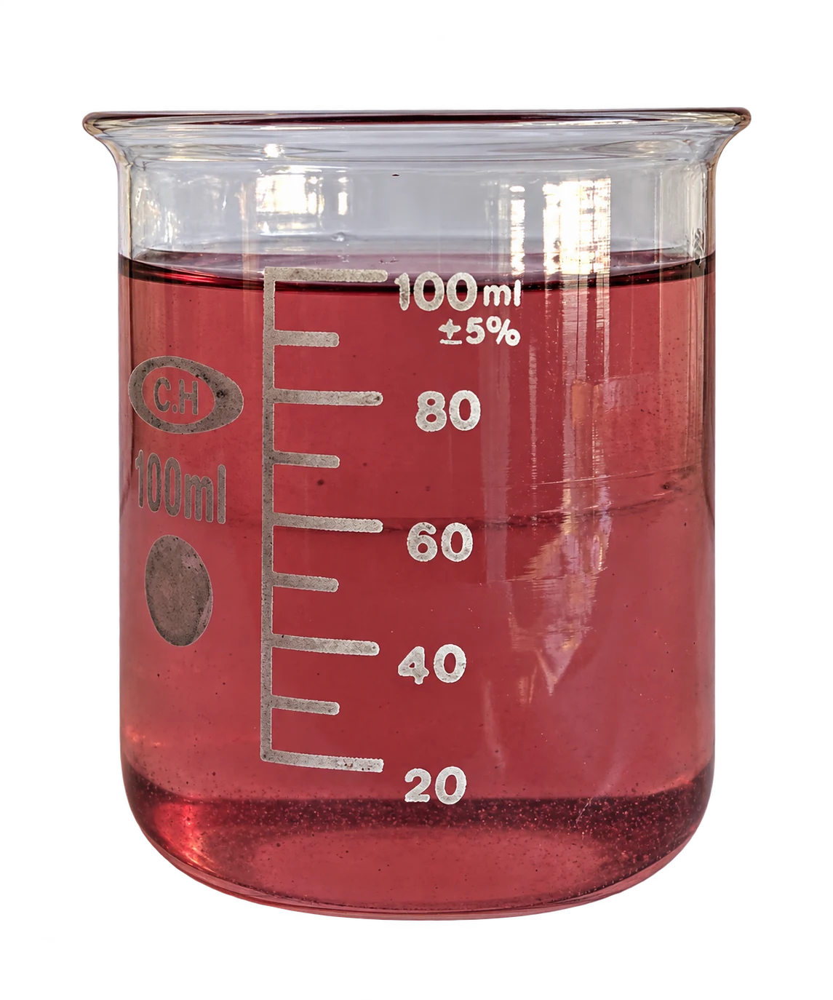
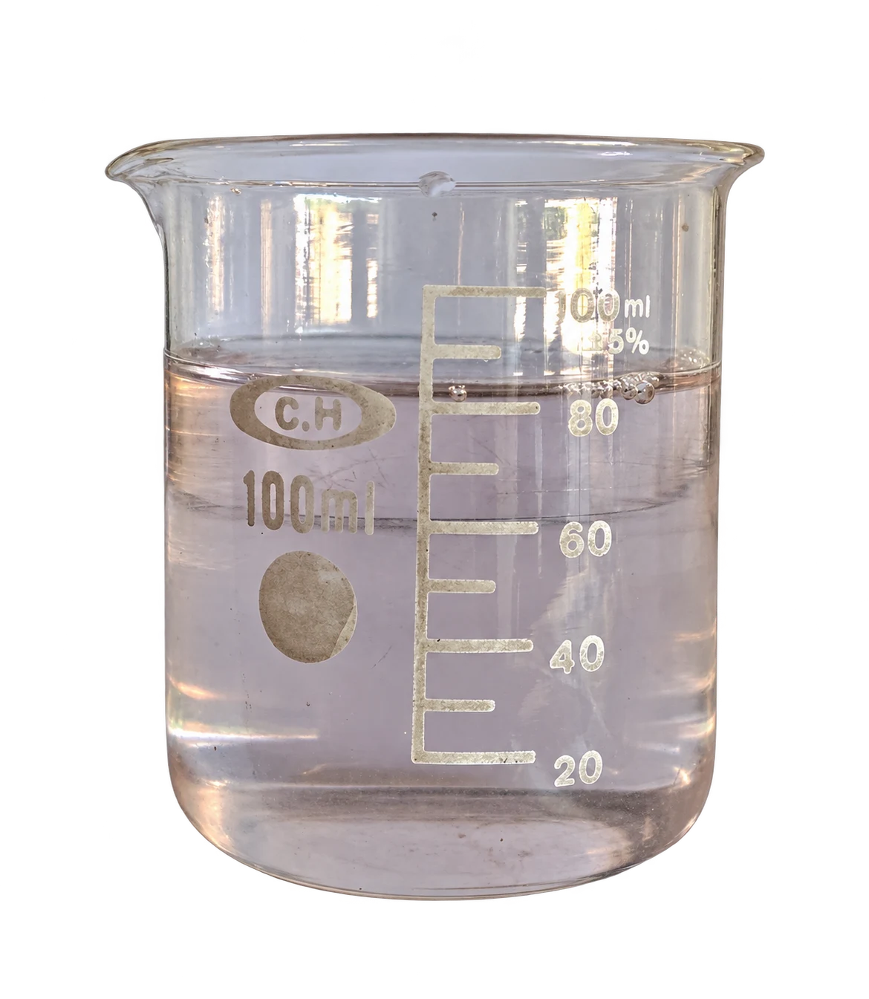
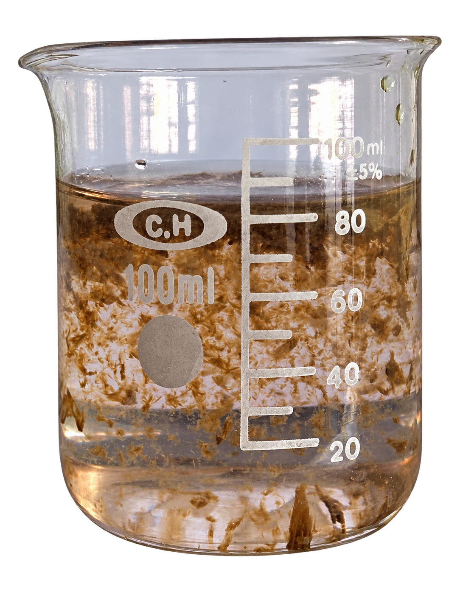
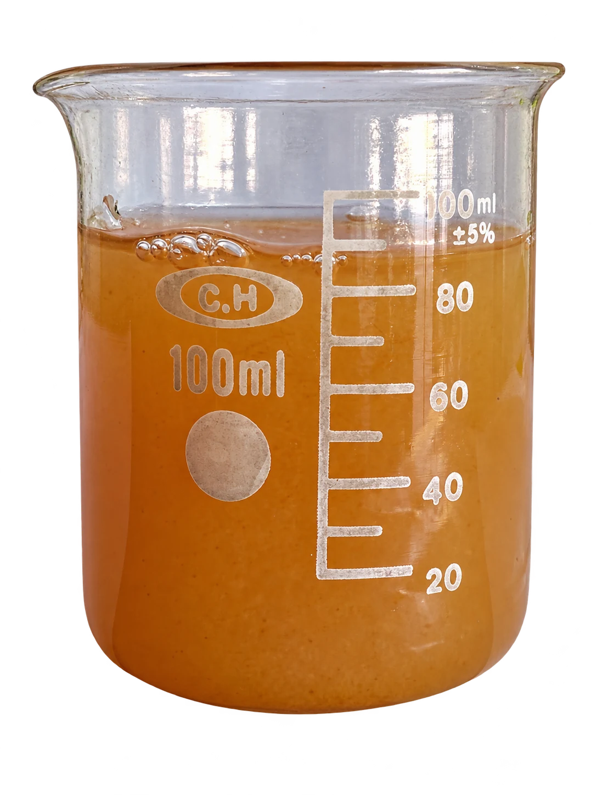
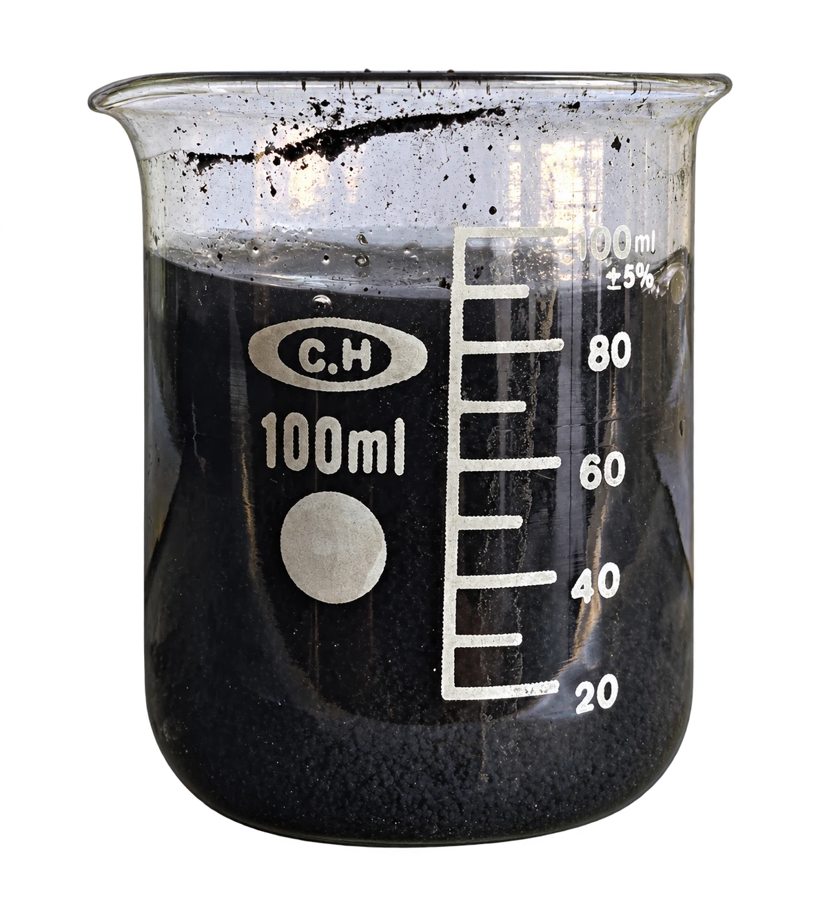
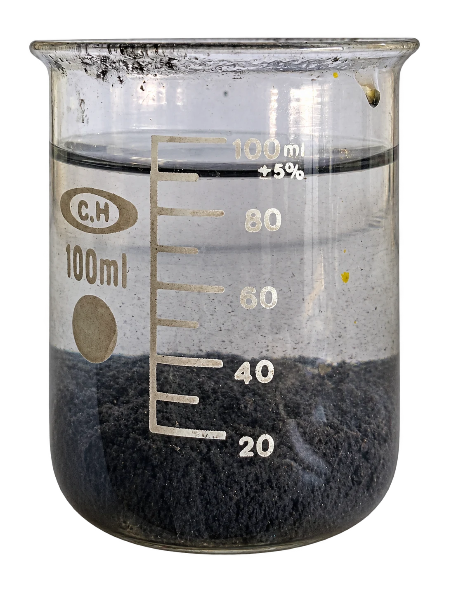

依線上比例稀釋 20 倍後，以氧化劑搭配輔助藥劑進行破螯合處理，再加入 MC2 金屬捕集劑捕集剩餘金屬，最後靜置沉澱分層。
這個試驗在觀察什麼？
本次紀錄聚焦於含螯合成分的鋅鎳合金鍍液，從依線上比例稀釋、氧化破螯合，到 MC2 金屬捕集與沉澱分層。
本次使用藥劑：氧化劑／氧化劑輔助藥劑／MC2 金屬捕集劑
依實際順序，查看完整反應過程

鋅鎳合金鍍液
鋅鎳合金鍍液的處理前外觀。

稀釋 20 倍
依線上稀釋比例稀釋 20 倍，記錄稀釋後的液體外觀。

加入氧化劑
加入藥劑一（氧化劑），啟動前段破螯合處理，並記錄此階段的反應外觀。

加入輔助藥劑
接續加入藥劑二（氧化劑輔助藥劑），配合氧化劑進行原液的破螯合處理，為後續金屬捕集作準備。

加入 MC2
加入藥劑三（MC2 金屬捕集劑），用於捕集破螯合處理後的剩餘金屬，再進行沉澱分離。

沉澱分層
靜置後可觀察到上層液體與下層沉澱分層。
照片觀察與檢測結果，需要分開判讀
本案例呈現單次試驗的反應外觀，未提供完整檢測數據，不能據此判定去除率或排放達標。實際方案需依水樣、原水條件及檢測報告評估，圖文不是現場加藥操作指引。
主要服務地區新北市台中市
台灣雷德斯減廢科技主要服務新北市與台中市，提供工業廢水處理藥劑、污泥處理設備及人機自動化整合。依水質、處理量與現有設備評估方案，現場服務安排請先聯繫確認。
從現況開始評估
詢問前，先準備這些資料
沒有完整報告也可以先聯繫，從目前能提供的資料開始討論。
- 製程與廢水來源，例如化學鎳、鋅鎳合金鍍液或振動研磨排水。
- 每日處理量、批次量，以及原水 pH、COD、金屬等既有檢測報告。
- 現行加藥流程、使用藥劑與處理設備照片。
- 想改善的問題與目標，例如金屬殘留、沉澱分離或操作穩定性。
延伸閱讀：產品與其他案例
從產品用途與實際反應照片，了解不同廢水的評估方向。